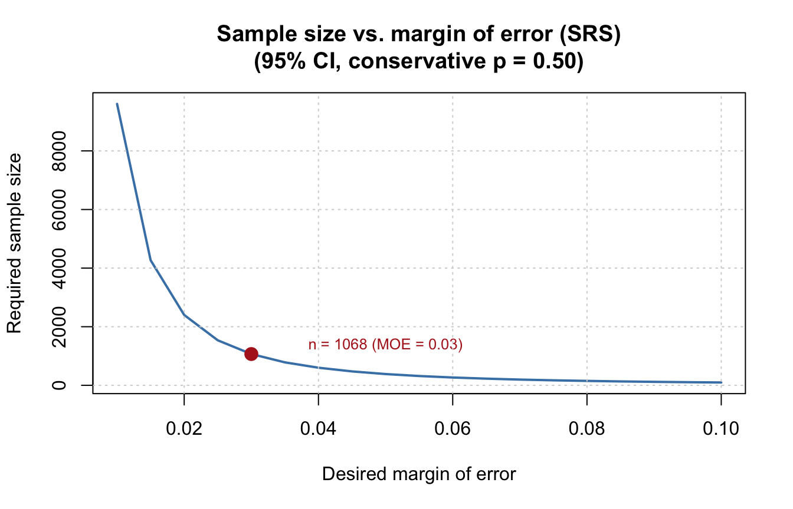
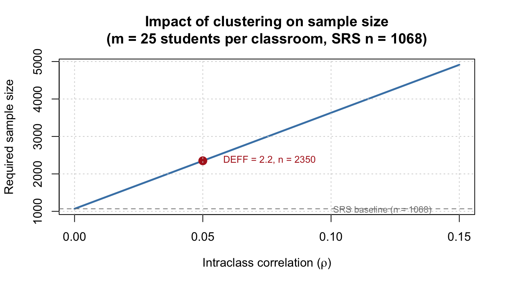
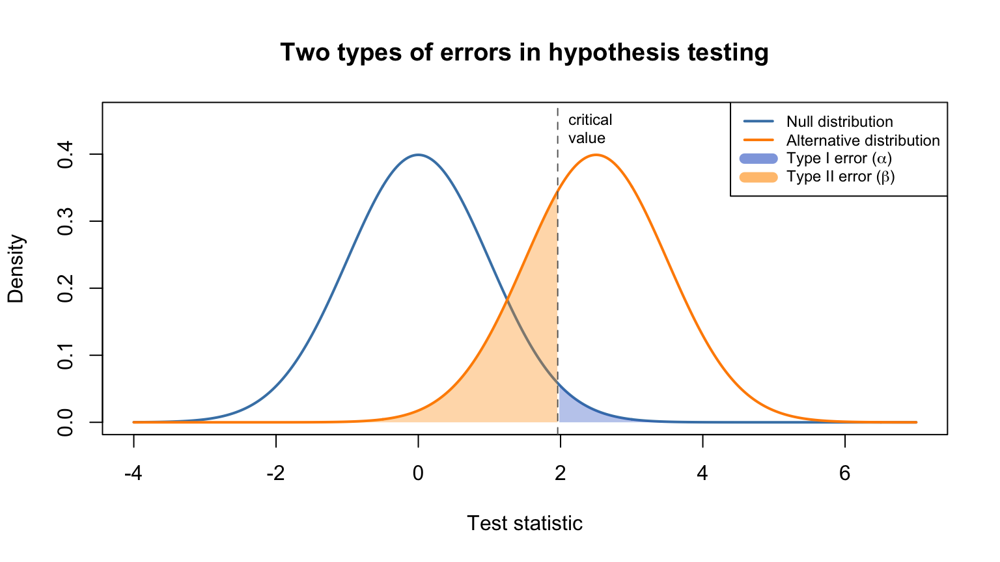
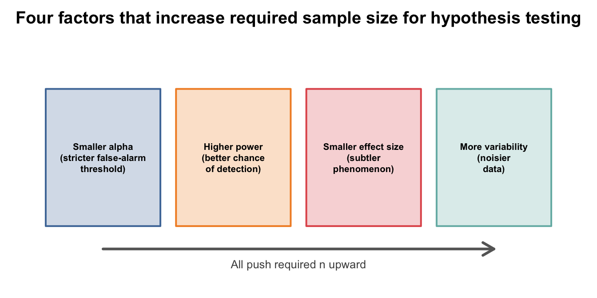
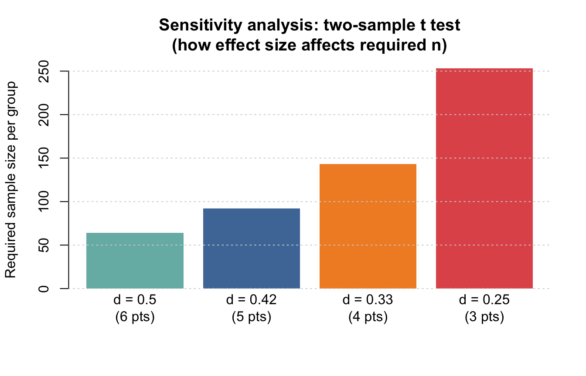

Setup code (click to expand)
library(pwr)
options(digits = 3)
set.seed(20260303)
z_value <- function(conf_level = 0.95) {
qnorm(1 - (1 - conf_level) / 2)
}April 29, 2026
This tutorial introduces the logic of sample size determination and shows how to do common calculations in R. The examples use education settings so that students can see how design choices connect to real studies.
The tutorial is organized into two parts that mirror two distinct research goals:
Imagine you want to know how students in your school district feel about school safety. You could ask every single student, but that’s usually too expensive and time-consuming. So you ask a sample — a smaller group chosen to represent the whole population.
The question is: how many students do you need to ask?
Sample size determination is the process of finding the “sweet spot” where your sample is large enough to give trustworthy answers but not larger than necessary.
When you survey a sample, you compute a sample statistic (e.g., “62% of students feel safe at school”). But you know this number might be a little off from the true population value. A confidence interval gives you a range of plausible values for the true population value.
For example, a 95% confidence interval of [58%, 66%] means: “We are 95% confident that the true proportion of students who feel safe is somewhere between 58% and 66%.”
The margin of error is half the width of the confidence interval. In this example, the margin of error is 4 percentage points (62% \(\pm\) 4%).
A larger sample gives a narrower confidence interval (smaller margin of error), which means a more precise estimate.
Two common goals lead to different sample size calculations:
| Goal | Question you’re asking | What you specify | Sampling design matters? |
|---|---|---|---|
| Estimation | “How precise does my estimate need to be?” | Margin of error, confidence level | Yes — SRS, stratified, and cluster designs each have their own formula |
| Hypothesis testing | “Can I detect an effect that matters?” | Alpha, power, effect size | Yes — cluster designs inflate required \(n\) via the design effect |
We cover estimation in Part I and hypothesis testing in Part II.
In estimation problems, the goal is to produce a sufficiently precise estimate of a population quantity. The key input you control is the margin of error — how close you want your sample estimate to be to the true value.
A school district wants to estimate the proportion of Grade 8 students who report a strong sense of school belonging. The district wants:
We will work through the sample size calculation under three designs: simple random sampling, stratified sampling, and we’ll discuss the adjustment needed for cluster sampling.
Under SRS, the required sample size for a proportion (without finite population correction) is:
\[ n = \frac{z^2 \; p(1-p)}{E^2} \]
| Symbol | Meaning | Example |
|---|---|---|
| \(z\) | Critical value from the normal distribution for your confidence level. For 95% confidence, \(z = 1.96\). | Higher confidence → larger \(z\) → larger \(n\) |
| \(p\) | Your best guess at the true proportion. | If you expect about 50% of students feel belonging, \(p = 0.50\) |
| \(E\) | The margin of error — how precise you want your estimate to be. | \(E = 0.03\) means you want to be within \(\pm\) 3 percentage points |
Why use \(p = 0.50\) when you don’t know the true proportion? Because \(p(1-p)\) is largest when \(p = 0.50\). This gives the most conservative (largest) sample size, so you’re safe no matter what the true value turns out to be.
moe <- 0.03
n_prop_srs <- function(moe, conf_level = 0.95, p = 0.5) {
z <- z_value(conf_level)
ceiling(z^2 * p * (1 - p) / moe^2)
}
n_srs_conservative <- n_prop_srs(moe = moe, conf_level = 0.95, p = 0.50)
n_srs_prior30 <- n_prop_srs(moe = moe, conf_level = 0.95, p = 0.30)
data.frame(
assumption_for_p = c(0.50, 0.30),
required_n = c(n_srs_conservative, n_srs_prior30)
)
In stratified sampling, you divide the population into non-overlapping subgroups called strata (e.g., school levels: elementary, middle, high school) and sample separately from each stratum.
Why bother? Because if the strata differ from each other but are relatively homogeneous within, stratification can give you a more precise estimate (smaller margin of error) for the same total sample size — or equivalently, the same precision with a smaller sample.
Suppose the school district has three school levels and some prior information:
| Stratum | School level | Population share (\(W_h\)) | Anticipated \(p_h\) |
|---|---|---|---|
| 1 | Elementary | 0.45 | 0.65 |
| 2 | Middle | 0.30 | 0.50 |
| 3 | High | 0.25 | 0.40 |
With proportional allocation, you sample from each stratum in proportion to its population share. The formula is:
\[ n_{\text{prop}} = \frac{z^2 \sum_{h=1}^{H} W_h \, p_h(1-p_h)}{E^2} \]
The key difference from the SRS formula is inside the numerator: instead of using a single \(p(1-p)\), we take a weighted average of the within-stratum variances \(p_h(1-p_h)\). When strata differ in their proportions, this weighted average is smaller than the conservative \(0.5 \times 0.5 = 0.25\) used in SRS, which is why stratification can reduce the required sample size.
n_prop_stratified_prop <- function(moe, conf_level = 0.95, W, p_h) {
z <- z_value(conf_level)
ceiling(z^2 * sum(W * p_h * (1 - p_h)) / moe^2)
}
n_strat_prop <- n_prop_stratified_prop(moe = 0.03, W = W, p_h = p_h)
n_strat_prop[1] 1014Under SRS with no prior information, we assume the worst case (\(p = 0.50\)). When we have prior information about stratum-level proportions, the weighted average variance is typically smaller than the worst-case value, so stratification reduces the required \(n\). The more the strata differ from each other, the bigger the savings.
In a perfect world, everyone you invite would respond. In reality, not everyone does. If you expect only 70% of invited students to actually complete the survey, inflate the invitation count:
\[ n_{\text{invite}} = \frac{n}{\text{response rate}} \]
In cluster sampling, you don’t sample individual students directly. Instead, you sample groups (clusters) — such as entire classrooms or entire schools — and then survey everyone (or a random subset) within the selected clusters.
Why use cluster sampling? It’s often more practical and cheaper. Getting a list of every student in a district may be hard, but getting a list of schools is easy. You can then visit a handful of schools and survey all students there.
The catch: students within the same classroom or school tend to be more similar to each other than students picked at random from the whole district. This similarity reduces the effective information per student, which means you need a larger total sample to achieve the same precision as SRS.
The design effect (DEFF) quantifies how much cluster sampling inflates the required sample size. More formally, it is calculated as the ratio of the variance of an estimator based on a sample from an (often) complex sampling design, to the variance of an alternative estimator based on a simple random sample (SRS) of the same number of elements:
\[ \text{DEFF} = 1 + (m - 1) \times \rho \]
| Symbol | Meaning |
|---|---|
| \(m\) | Average cluster size (e.g., number of students per classroom) |
| \(\rho\) (rho) | Intraclass correlation coefficient (ICC) — how similar individuals within a cluster are. Ranges from 0 (no similarity) to 1 (identical). |
The adjusted sample size is simply:
\[ n_{\text{cluster}} = n_{\text{SRS}} \times \text{DEFF} \]
Suppose the district samples whole classrooms (average size \(m = 25\)) and the ICC for school belonging is \(\rho = 0.05\):
[1] 2.2[1] 2350
Even a small ICC (\(\rho = 0.05\)) combined with a moderate cluster size (\(m = 25\)) gives a DEFF of 2.2, meaning you need 120% more students than under SRS. Larger clusters or higher ICCs push the DEFF even higher.
For student-level outcomes (test scores, attitudes), ICCs at the classroom level are often between 0.05 and 0.25. At the school level, ICCs are typically between 0.05 and 0.15. Always check the literature for your specific outcome and context.
In hypothesis testing problems, the goal is to have a good chance of detecting an effect if one exists. Here we don’t talk about margin of error. Instead, the key concepts are alpha, power, and effect size.
When we run a hypothesis test, we can make two kinds of mistakes. An everyday analogy helps:
Think of a hypothesis test like a fire alarm:
A good alarm system (and a good study!) keeps both error rates low.
More formally:
| Null is actually true | Alternative is actually true | |
|---|---|---|
| We reject the null | Type I error (\(\alpha\)) | Correct decision (Power = \(1 - \beta\)) |
| We fail to reject the null | Correct decision | Type II error (\(\beta\)) |
The figure below shows two sampling distributions: one when the null hypothesis is true (left, blue) and one when the alternative is true (right, orange). The shaded areas illustrate the two types of errors.

In the figure:
When we increase the sample size, the two distributions become narrower and further apart relative to each other. This makes it easier to tell them apart, which means higher power (less overlap, fewer missed detections).
Effect size tells us how big the phenomenon is, on a standardized scale. Think of it this way: a difference of 5 points on a test could be huge or trivial — it depends on how spread out the scores are. Effect sizes put everything on a common yardstick so we can talk about “small,” “medium,” or “large” effects.
| Analysis | Effect size measure | Formula |
|---|---|---|
| One- or two-sample t test | Cohen’s d | \(d = \frac{\text{mean difference}}{\text{standard deviation}}\) |
| Regression | Cohen’s \(f^2\) | \(f^2 = \frac{R^2}{1 - R^2}\) |
Jacob Cohen (1988) proposed rough benchmarks that are widely used as starting points:
| Size | Cohen’s d | Cohen’s f² | R² |
|---|---|---|---|
| Small | 0.2 | 0.02 | ~2% |
| Medium | 0.5 | 0.15 | ~13% |
| Large | 0.8 | 0.35 | ~26% |
These are rough guides, not rigid rules. In education research, a “small” effect can still be practically important (e.g., an intervention that raises reading scores by 0.2 SD across an entire state). Always think about what size of effect would be meaningful in your context rather than relying solely on these labels.

pwr packageFor all sample size and power calculations in Part II, we use the pwr package (Cohen, 1988). The basic idea is simple: leave out the argument you want to calculate, and the function solves for it.
| Function | Test | Key arguments |
|---|---|---|
pwr.t.test() |
One-sample, two-sample, or paired t test | d, n, sig.level, power, type |
pwr.f2.test() |
General linear model (regression, ANOVA) | u (numerator df), v (denominator df), f2, sig.level, power |
pwr.r.test() |
Correlation test | r, n, sig.level, power |
pwr.chisq.test() |
Chi-squared test | w, N, df, sig.level, power |
In each case, you supply the effect size on the appropriate scale (Cohen’s d for t tests, \(f^2\) for regression, etc.) and leave out one of n/power/sig.level — the function solves for whichever you omit.
A college of education wants to know whether a new writing support module raises average writing self-efficacy above a historical benchmark of 70 points.
In plain language: “After the new module, will students’ average self-efficacy be higher than 70?”
The planning values are:
To use a power analysis, we need to express the improvement in standard-deviation units. That’s Cohen’s d:
\[ d = \frac{\mu_1 - \mu_0}{\sigma} = \frac{\text{meaningful difference}}{\text{standard deviation}} \]
delta_one_sample <- 3
sd_one_sample <- 10
d_one_sample <- delta_one_sample / sd_one_sample
d_one_sample[1] 0.3A Cohen’s d of 0.3 is considered small by Cohen’s benchmarks (\(d = 0.2\) is small, \(d = 0.5\) is medium). This means we’re looking for a subtle effect, so we’ll need a reasonably large sample to detect it.
pwr.t.test()We pass our effect size d to pwr.t.test() and leave out n — the function solves for the sample size:
one_sample_result <- pwr.t.test(
d = d_one_sample,
sig.level = 0.05,
power = 0.80,
type = "one.sample",
alternative = "two.sided"
)
one_sample_result
One-sample t test power calculation
n = 89.1
d = 0.3
sig.level = 0.05
power = 0.8
alternative = two.sided[1] 90ceiling() function rounds up because we can’t recruit a fraction of a person.If you expect 15% of students to drop out before completing the study:
So you should recruit 105 students to end up with about 90 completers.
A power curve shows how power increases as sample size grows. The pwr package provides a convenient built-in plot() method:
How to read this plot: Find 0.80 on the y-axis. The point where the power curve crosses that line tells you the minimum sample size needed. Notice that the curve flattens out at larger sample sizes — going from 80% to 90% power requires a noticeable increase in \(n\).
A district is comparing a tutoring program with business-as-usual instruction. The outcome is end-of-term mathematics score.
Do students who receive tutoring score higher in math than students who don’t?
The planning values are:
delta_two_sample <- 5
sd_two_sample <- 12
d_two_sample <- delta_two_sample / sd_two_sample
d_two_sample[1] 0.417A Cohen’s d of 0.42 is between the small (0.2) and medium (0.5) benchmarks.
pwr.t.test()We pass Cohen’s d directly and leave out n:
two_sample_result <- pwr.t.test(
d = d_two_sample,
sig.level = 0.05,
power = 0.80,
type = "two.sample",
alternative = "two.sided"
)
two_sample_result
Two-sample t test power calculation
n = 91.4
d = 0.417
sig.level = 0.05
power = 0.8
alternative = two.sided
NOTE: n is number in *each* group[1] 92pwr.t.test() reports the required sample size per group, not the total. Don’t forget to multiply by 2!
per_group_n <- ceiling(two_sample_result$n)
total_n <- 2 * per_group_n
data.frame(per_group_n = per_group_n, total_n = total_n)If you expect 10% loss to follow-up in each group, recruit more per group:
A sensitivity analysis checks how the required sample size changes under different assumptions. It’s good practice because our initial effect size guess may be wrong. For example, we could consider different delta values:

Detecting a 3-point difference requires roughly four times as many students per group as detecting a 6-point difference. This is why it’s so important to think carefully about what effect size is realistic before collecting data.
A researcher wants to study whether weekly independent reading time predicts reading comprehension score among middle school students.
Do students who read more on their own also tend to have better reading comprehension?
Suppose the researcher expects the simple regression to explain about 9% of the variance in reading comprehension:
\[ R^2 = 0.09 \]
What does \(R^2 = 0.09\) mean? It means that 9% of the differences in reading comprehension scores across students can be “explained” (or predicted) by knowing how much they read independently. The other 91% is due to other factors.
The design goals are:
For regression, the effect size measure is Cohen’s \(f^2\), which rescales \(R^2\):
\[ f^2 = \frac{R^2}{1-R^2} \]
An \(f^2\) of 0.099 falls between the small (0.02) and medium (0.15) benchmarks — so this is a modest but meaningful effect.
pwr.f2.test()The pwr.f2.test() function handles regression (and general linear model) power analysis. It uses:
u = numerator degrees of freedom = number of predictors,v = denominator degrees of freedom (left out — this is what we solve for),f2 = Cohen’s \(f^2\) effect size.The total sample size is \(n = v + u + 1\).
regression_result <- pwr.f2.test(
u = 1,
f2 = f2_reg,
sig.level = 0.05,
power = 0.80
)
regression_result
Multiple regression power calculation
u = 1
v = 79.3
f2 = 0.0989
sig.level = 0.05
power = 0.8[1] 82pwr.f2.test() output
The function returns v (denominator degrees of freedom), not n directly. To get \(n\), compute: \(n = \lceil v \rceil + u + 1\), where \(u\) is the number of predictors.
Try these on your own to build intuition. Each one changes just one input — notice how the required sample size responds.
Estimation exercises:
Recalculate the SRS proportion example with a margin of error of 0.02 instead of 0.03. How much does \(n\) increase?
Suppose a fourth stratum (vocational schools) is added with \(W_4 = 0.10\) and \(p_4 = 0.35\). Adjust the other weights proportionally (multiply each by 0.90) and recalculate the stratified sample sizes. Does adding a stratum help or hurt?
Recalculate the cluster-adjusted sample size with an ICC of \(\rho = 0.10\) instead of 0.05. What if the average cluster size is \(m = 30\) instead of 25?
Hypothesis-testing exercises:
Recalculate the one-sample t test for power = 0.90 instead of 0.80. What’s the cost of wanting to be “more sure”?
Recalculate the two-sample t test if the meaningful difference is only 4 points instead of 5. How does this affect per-group \(n\)?
Recalculate the regression example for \(R^2 = 0.04\) and discuss why the required sample increases so dramatically.
Take the two-sample t test result and apply a DEFF for a cluster-randomized design with \(m = 20\) and \(\rho = 0.08\). How many students per group do you need now?
Sample size determination is ultimately a planning argument: you specify what you want to estimate or detect, how much uncertainty you can tolerate, and what assumptions are plausible. There is no single “right” answer — but there are well-reasoned answers and poorly-reasoned ones.
R makes these assumptions transparent and easy to explore, which is one reason it is so useful for teaching research design. When you write a sample size justification for a grant proposal or IRB application, you can include your R code so reviewers can see exactly what you assumed and why.